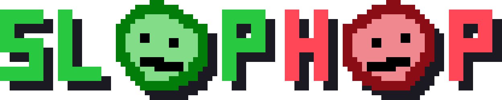
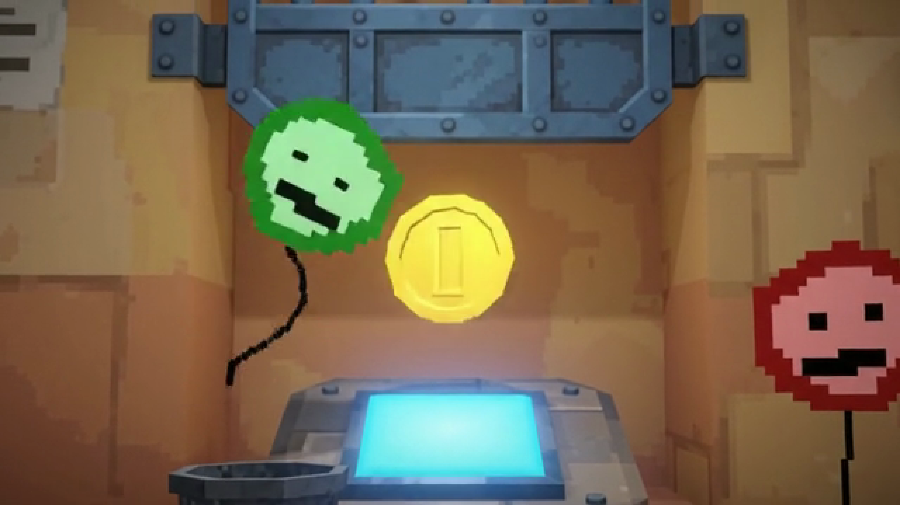
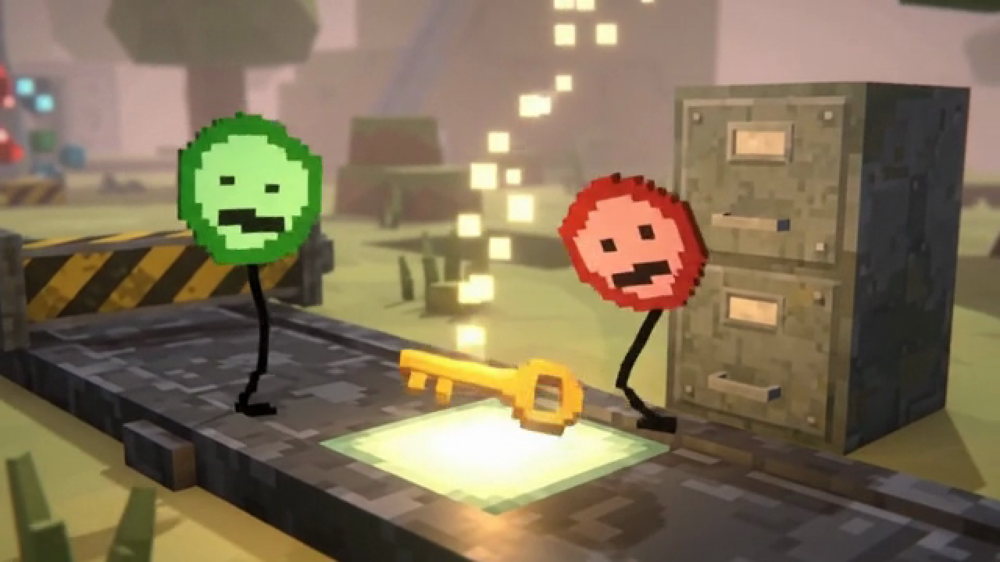
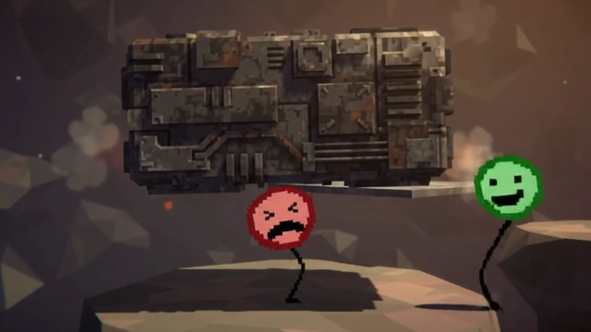
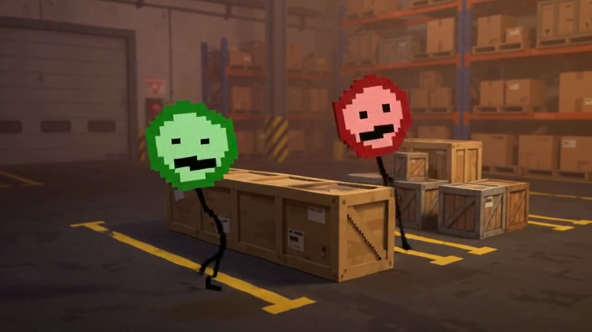
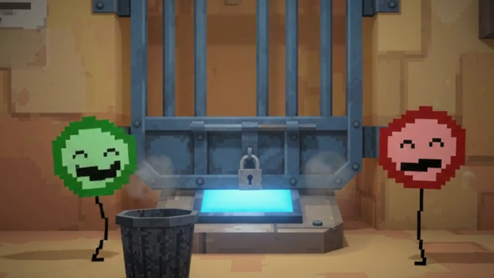

Learn the logic that runs the world,
see how it's changing, and weigh in.
My submission for Tieto's Earned Trust in AI Code challenge
Most people don't know.
They change every day. You never see it.
Pew Research Center, 2025 · 5,023 U.S. adults
Researchers call it AI resignation: AI as
"an overpowering and seemingly inevitable force."
Siebold, Witschas & Mühlhoff, Future Humanities, 2026
Open source: every change, out in the open, for anyone to read.
// voidOpenPaymentLinks closes the unpaid payment links on a voided…func (s *paymentService) voidOpenPaymentLinks(ctx, invoiceID string) { filter.DestinationID = lo.ToPtr(invoiceID) filter.PaymentStatus = lo.ToPtr(string(types.PaymentStatusPending))
Anyone can read it. Almost nobody does.
So we turn it into games.
Never written a line of code? You're exactly who this is for.
Real updates to the software around you, made with AI, as they happen.
Not the code, but the rules it follows.
Does the new behaviour actually make sense?

…you could still pay an invoice that had been cancelled.

…an AI agent wrote its own secret keys into its notes.

…an aircraft wing simulator made parts eight times too heavy.

…a warehouse screen hid how many items to pack.
Every one written with an AI coding tool, and approved by a person.

Soon, no person will check every change by hand.
Wouldn't you still want to know what's changing?
And keep your logical thinking sharp while you're at it.
From the puzzle "Dead Links Tell No Bills", a real change to flexprice
Every puzzle is made in about a minute, all at once.
Merged, approved pull requests signed by an AI tool.
Scores ~50 fresh PRs at once: small? relatable?
Writes Red's old rules and Green's new ones.
Runs the old and new code in Python. No guessing.
A looping soundtrack at the project's tempo.
A 15-second cutscene straight out of 1998.
Who uses it: real numbers, sources, logos.
Explains every case you just solved.
Is Green's way right for this case?
Votes go back where they matter: to the people who approved the change, and to the AI tools that wrote it. Where players doubt Green, someone takes a second look.
Not just one small change, but whole updates and whole projects at once. Follow how the apps you use every day evolve, one puzzle at a time.
slophop.vercel.app · play the live demo and hop some slop